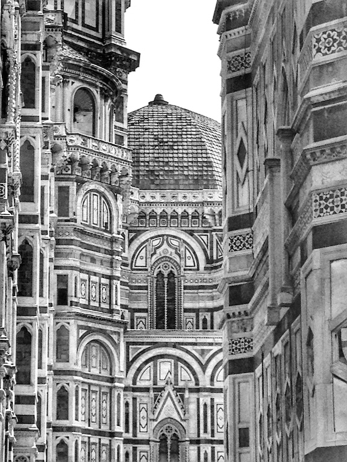

Photo by Francesca Tosolini
These Catholic churches offer services in English: Florence: Duomo of Florence. Every Saturday (sabato) at 5pm. Piazza del Duomo. Rome: Church of Santa Susanna (American National Church), Via XX Settembre 15. Some non-Catholic churches also offer services in English: Florence: St. James Church (American Episcopal), Via B. Rucellai 9. Florence: St. Mark’s English Church (Anglican), Via Maggio 16. Rome: All Saints Church (Anglican), Via del Babuino 153. Rome: St. Andrew's Church (Presbyterian), Via XX Settembre 7. Rome: Rome Baptist Church, Piazza San Lorenzo in Lucina 35. Rome: Ponte Sant'Angelo Methodist Church, Via del Banco di Santo Spirito 3. Venice: St. George’s Church (Anglican), Dorsoduro, Campo San Vio 870. Venice: Lutheran Evangelical Church, Cannaregio, Campo SS. Apostoli 4443. Milan: Anglican Church of All Saints, Via Solferino 12. Naples: Anglican Church, Via San Pasquale 18. {This is an excerpt from chapter 7 “Churches and museums” of the eBook “Italy from the Inside. A native Italian reveals the secrets of traveling in Italy”}